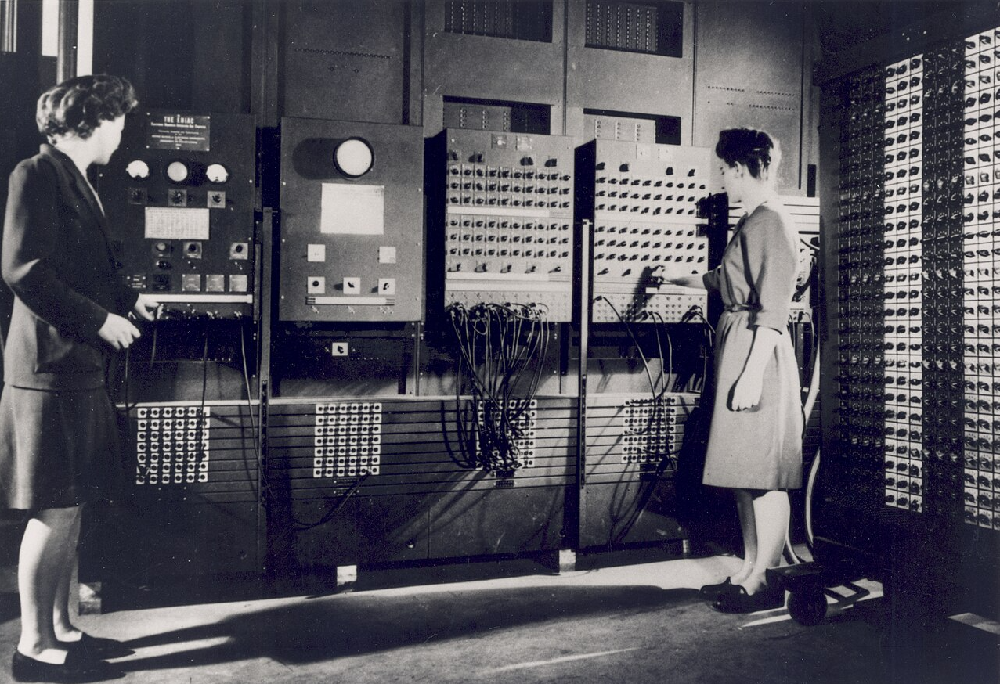
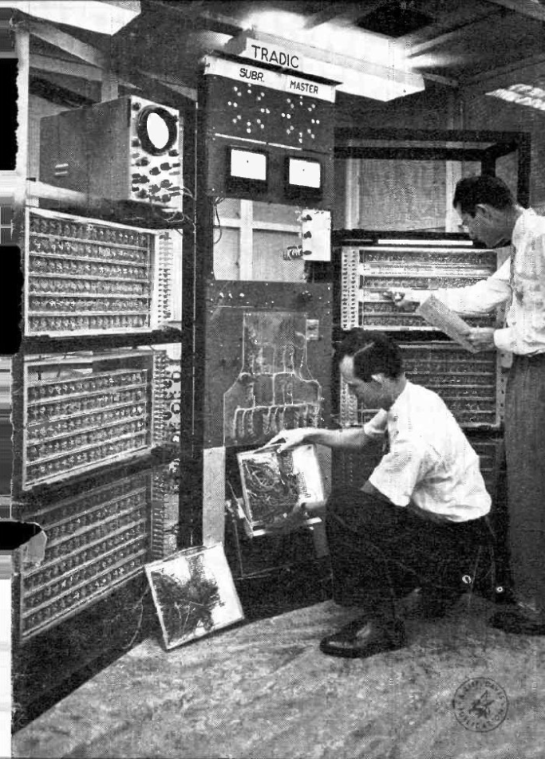
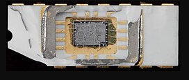
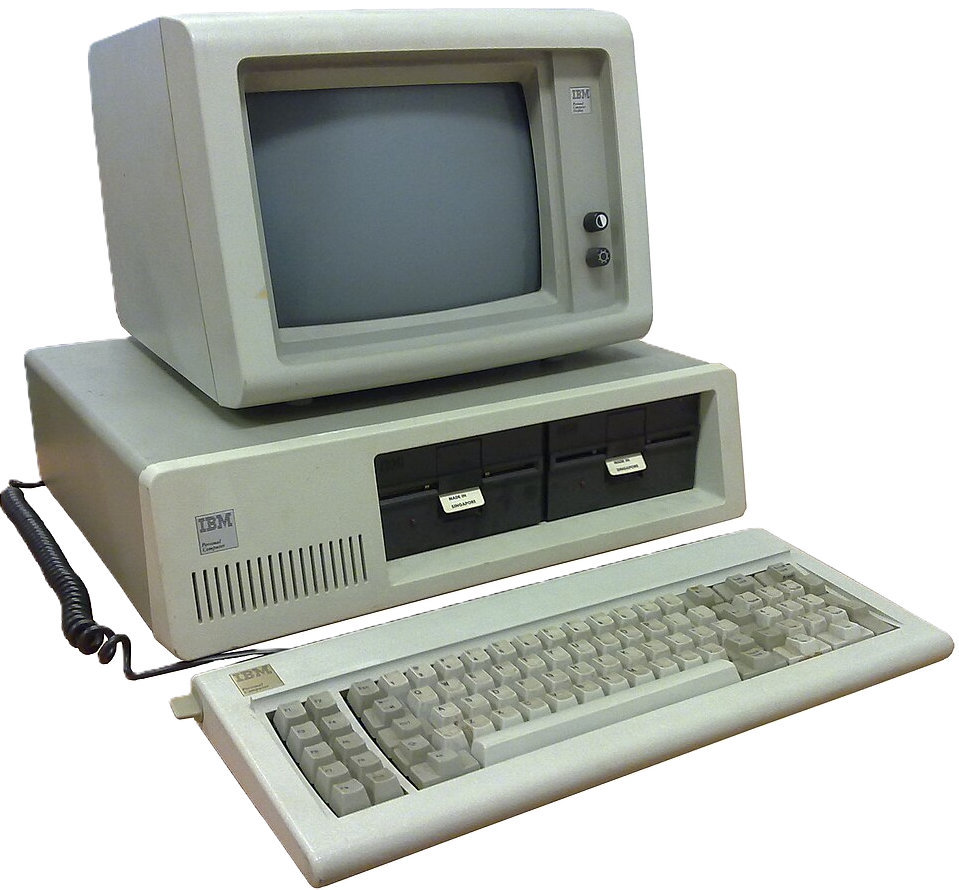
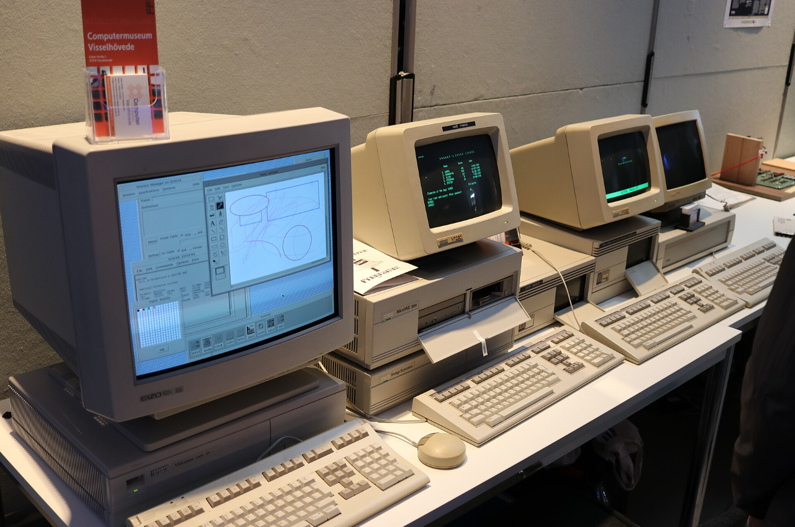
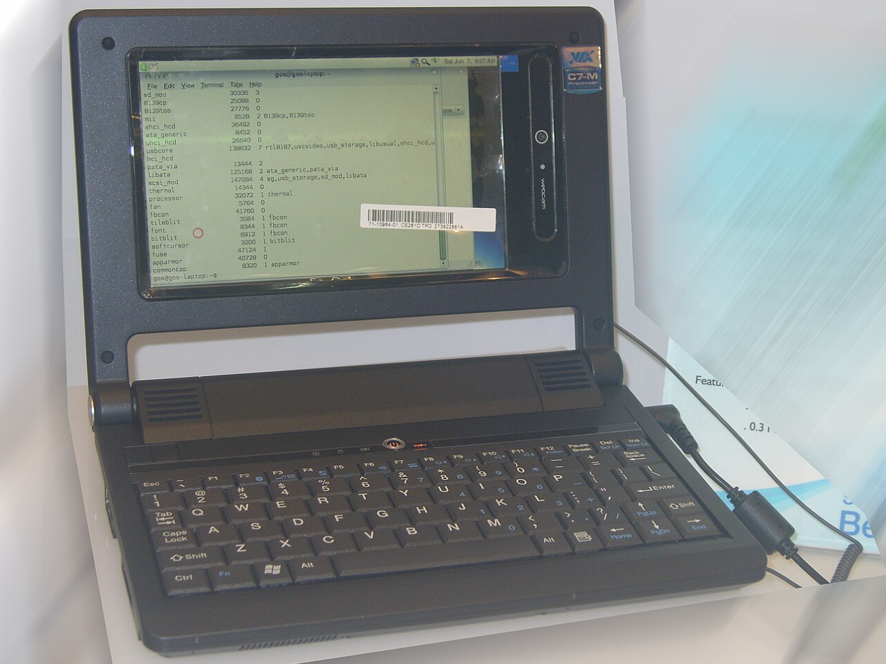
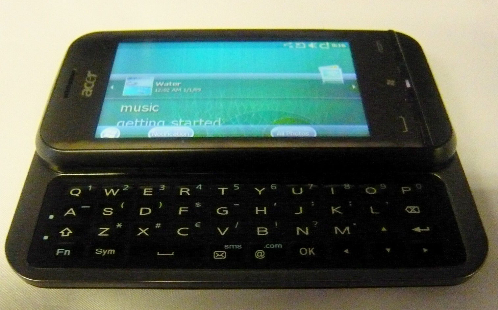
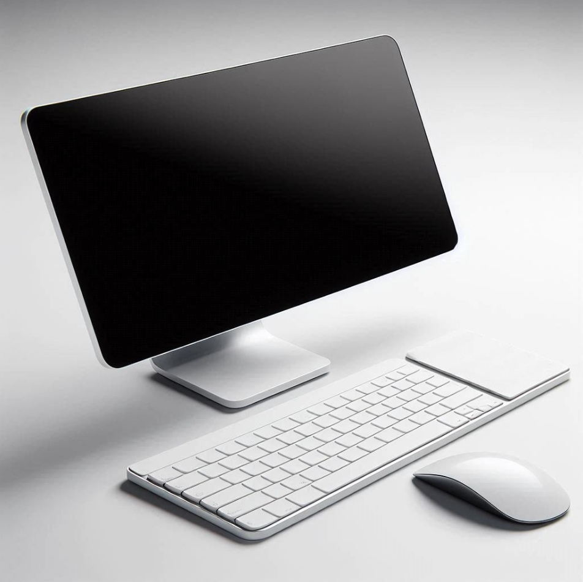

Honnan indult a számítástechnika?
A számítógépek fejlődése hosszú folyamat eredménye. A korai számítógépek hatalmas méretűek voltak, kevés
feladat elvégzésére voltak képesek, és működtetésükhöz nagy mennyiségű energia kellett. Az évtizedek
során a technológia folyamatosan fejlődött, így a számítógépek egyre kisebbek, gyorsabbak és könnyebben
használhatók lettek.
A fejlődés során megjelentek a személyi számítógépek, a laptopok, az okostelefonok és a modern, nagy
teljesítményű számítógépes rendszerek.
A számítógépek fejlődése
1940-es évek
ENIAC - az elektronikus számítógépek kora

Az ENIAC az egyik első általános célú elektronikus számítógép volt. Az 1940-es években készült, és
hatalmas méretű gép volt, amely egy egész helyiséget elfoglalt.
A korai számítógépek működtetése bonyolult volt, és a mai gépekhez képest rendkívül korlátozott
erőforrásokkal rendelkeztek.
1950-60-as évek - Tranzisztorok és új számítógépek
A tranzisztor megjelenése

A tranzisztor elterjedése jelentős változást hozott a számítógépek fejlődésében. A korábbi
elektroncsöveknél kisebb, megbízhatóbb és kevesebb energiát fogyasztó megoldást jelentett.
Ennek köszönhetően a számítógépek egyre kisebbek és megbízhatóbbak lettek.
1970-es évek - A mikroprocesszor
Megszületik a mikroprocesszor

A mikroprocesszor megjelenése új korszakot indított el a számítástechnikában. A korábban több
alkatrészből álló központi feldolgozóegység egyetlen chipen is elhelyezhetővé vált.
Ez fontos lépés volt a kisebb és megfizethetőbb számítógépek létrejöttéhez.
1980-as évek - A személyi számítógépek
A számítógép bekerül az otthonokba

Az 1980-as évekre a személyi számítógépek egyre szélesebb körben terjedtek el. A számítógép már nem
csak nagy vállalatok és kutatóintézetek eszköze volt, hanem az otthonokban és az iskolákban is
megjelent.
Ebben az időszakban váltak ismertté többek között az IBM PC-kompatibilis számítógépek és az Apple
gépei.
1990-es évek - Az internet elterjedése
A számítógépek összekapcsolódnak

Az internet elterjedése alapjaiban változtatta meg a számítógépek használatát. A gépek már nem csak
önállóan működtek, hanem egymással is kommunikálhattak.
A világháló megjelenésével az információk elérése és megosztása sokkal egyszerűbbé vált.
2000-es évek - Laptopok és hordozható eszközök
A számítógép hordozhatóvá válik

A laptopok fejlődésével a számítógépek egyre könnyebben hordozhatóvá váltak. Az akkumulátoros működés
és a vezeték nélküli technológiák lehetővé tették, hogy a számítógépet szinte bárhol használhassuk.
Ebben az időszakban az okostelefonok is gyors fejlődésnek indultak.
2010-es évek - Mobil és felhőalapú technológiák
A számítástechnika mindenhol jelen van

Az okostelefonok és tabletek elterjedésével a számítástechnika a mindennapi élet részévé vált. A
felhőalapú szolgáltatások segítségével adatainkat és alkalmazásainkat interneten keresztül is
elérhetjük.
A számítógépek teljesítménye közben tovább növekedett, miközben méretük egyre kisebb lett.
Napjaink - Modern számítógépek és mesterséges intelligencia
A jelenlegi technológia

A mai számítógépek rendkívül nagy számítási teljesítményre képesek. A modern processzorok és grafikus
processzorok mellett egyre fontosabbá válik a mesterséges intelligencia és a gépi tanulás.
A számítástechnika ma már nemcsak a hagyományos számítógépeket jelenti, hanem okostelefonokat,
szervereket, felhőalapú rendszereket és különböző intelligens eszközöket is.
A számítógépek jövője
A számítástechnika fejlődése napjainkban is folytatódik. Az egyik fontos terület a mesterséges
intelligencia, amely egyre több feladatban jelenik meg.
Emellett kutatják a kvantumszámítógépeket, az új processzortechnológiákat és az energiatakarékosabb
számítógépes rendszereket is.
A jövő számítógépei várhatóan még nagyobb teljesítményre lesznek képesek, miközben tovább csökkenhet a
méretük és energiaigényük.